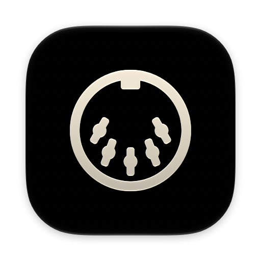

A small extension that adds Web MIDI support to Safari so sites can talk to your synths.
Safari has no Web MIDI API: WebKit has declined to ship one, citing fingerprinting. This extension adds it, navigator.requestMIDIAccess() and the rest of the API, so sites that play, edit or sequence your synths work in Safari too.
Safari Web MIDI is a port of Chromium’s implementation of the Web MIDI API, so sites behave as they do in Chrome. It talks to your devices through Core MIDI, the Mac’s own MIDI system.
Free to use. The source is on GitHub.
No. It runs in Safari on the Mac only.
Any site that uses the Web MIDI API: patch editors and librarians, sequencers, controllers, test pages. SysEx works too.